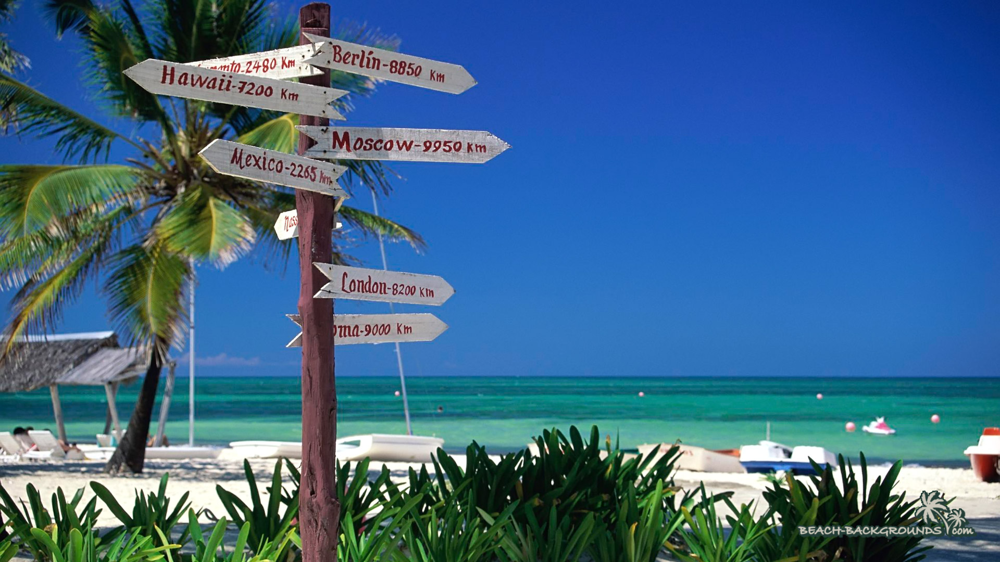

TRAVEL DIARY
Traveling has the potential to be wildly fulfilling. It exposes you to new cultures, different perspectives and unique experiences. The further you travel the more you are pushed out of your comfort zone. And the more you are pushed out of your comfort zone, the more you learn about yourself and the world around you. One of the most popular types of journals is a travel journal. By having a travel diary, you can keep all these new experiences and knowledge in one place where you can reflect on them.

What is a travel journal?
Travel journals are a place where you can write about trips you have taken, what you learned during and the experiences you had. It is a collection of adventures, stories, memories and discovery. It doesn’t matter where you're going or who you’re traveling with, an online trip journal can come anywhere.
Why Write A Journal When Traveling?
There are many benefits of keeping a journal when traveling, but here are a few to start with:
Remember More
By writing down the things you want to do on your trip and the things you have done during it, you won’t forget the reasons you wanted to go and will remember more of your visit.
Learn More
When traveling somewhere new, you will learn a lot about that place’s culture, customs and people. By having a place to write down your observations, you will absorb more of your surroundings.
Reflect More
A journal is a place to record new things you have discovered while exploring various places you visit. By having all these new findings in one place, you will be able to look back and reflect on what you have learned and apply it to other parts of your life.

How To Write Travel Journals: 5 Tips To Get The Most Out Of Your Journaling
You don’t need to be traveling to Timbuktu to write a travel diary. Your writing can start with a family vacation or a weekend getaway. All you need is a destination and your holiday journal can begin!
1. Use your journal to plan your trip
Your trip journal can begin before your trip has even started. Use your journal to start planning the things you want to do. It can be anything from a cool restaurant you want to eat at, a hike you want to go on or different sights you want to see. Write down whatever is on your trip check-list, so you don’t forget it. Once you know what you want to do, do some research and figure out the best way to do it. If you want to go see a special monument, figure out the best way to get there and put it in your journal. If you want to do some cool activities, write down the contact information of the people, places or tours that facilitate them. Your journal is also a great place to keep the contact information of your accommodations and transportation.


2. Write about what you imagine it will be like
Sometimes when you travel, your destination is wildly different than what you expected. Maybe you expected the local food to be bad and it turned out to be delicious. Maybe you imagined the town to be smaller than it actually is. Maybe you thought you would be more comfortable with the language. Whatever it is, think about writing it down before you arrive. It will be interesting to compare these predictions to what you actually experienced.

3. Write during your trip
It is always easier to remember things when they are fresh in your brain, so try and write as much as you can while traveling; every day if you can. Your journal entries don’t have to be long, but let them highlight what you feel was most important or exciting. How did you feel during your visit to the local market? What did you smell, taste and hear? Did you learn something new from the person you spoke to at the bar? Were you surprised by the clothes people were wearing? What was the view from the top of the mountain like? Before you go to bed, try and recall what you did that day, what you thought and how you felt. This will serve as a great way to remember more from your trip, but will also help you reflect and grow from what you encountered.

4. Add pictures to your journal
Even though your journal is meant for writing, pictures are still worth a thousand words. Combining pictures with your first-hand accounts of what they represent, or what happened when they were taken, will make for an even more comprehensive narrative of your travels. Don’t worry about glueing or taping anything either. Penzu allows you to upload pictures straight into your online travel journal, so you can keep your pictures and words connected and organized.

5. Write about your trip after you leave
Since you write about your trip before you arrive, you should also write about it after you leave. What was it like? What did you learn? What surprised you? What disappointed you? It is important to reflect on your travels, so you can retain new understandings and apply them to future adventures. This is also a great way to learn about yourself, other people you may have travelled with and how you can grow. Step back from all the things you did and try to see the big picture. It may surprise you.

Now that you know what to write in a travel diary and how to write one, all you need to decide is where to go. Pick a place get start your online journal today!